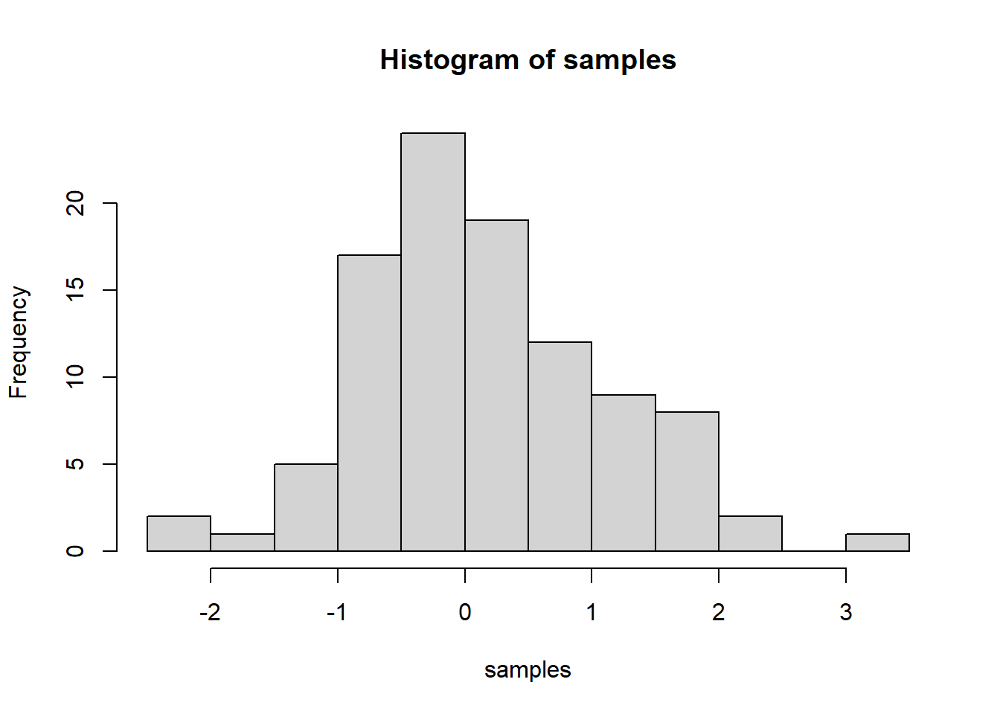
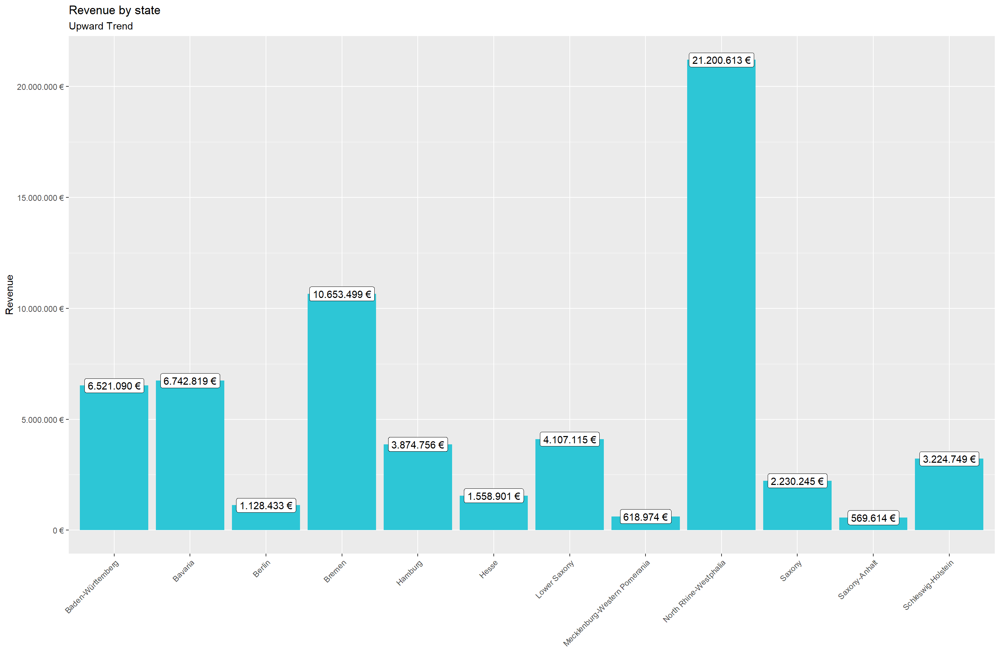
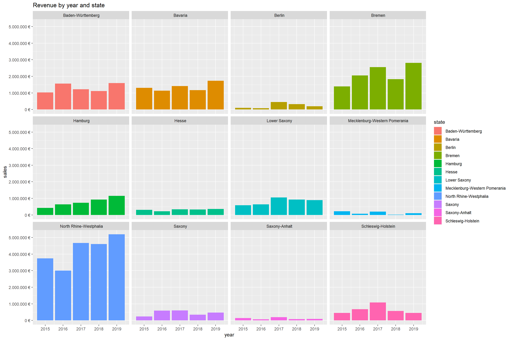

IMPORTANT: You can delete everything in here and start fresh. You might want to start by not deleting anything above this line until you know what that stuff is doing.
This is an .Rmd file. It is plain text with special features. Any time you write just like this, it will be compiled to normal text in the website. If you put a # in front of your text, it will create a top level-header.
Last compiled: 2020-12-06
Notice that whatever you define as a top level header, automatically gets put into the table of contents bar on the left.
You can add more headers by adding more hashtags. These won’t be put into the table of contents
Here’s an even lower level header
Last compiled: 2020-12-06
I’m writing this tutorial going from the top down. And, this is how it will be printed. So, notice the second post is second in the list. If you want your most recent post to be at the top, then make a new post starting at the top. If you want the oldest first, do, then keep adding to the bottom
Solutions to challenges
So far this is just a blog where you can write in plain text and serve your writing to a webpage. One of the main purposes of this lab journal is to record your progress learning R. The reason I am asking you to use this process is because you can both make a website, and a lab journal, and learn R all in R-studio. This makes everything really convenient and in the same place.
So, let’s say you are learning how to make a histogram in R. For example, maybe you want to sample 100 numbers from a normal distribution with mean = 0, and standard deviation = 1, and then you want to plot a histogram. You can do this right here by using an r code block, like this:
samples <- rnorm(100, mean=0, sd=1)
hist(samples)
# 2.0 Importing Files ----
library(tidyverse)
library(readxl)
# 2.0 Importing Files ----
bikes_tbl <- read_excel(path = "~/GitHub/ws20-business-data-science-basics---lab-journal-shruthi-janardhan/data_science/DS_101/00_data/01_bike_sales/01_raw_data/bikes.xlsx")
orderlines_tbl <- read_excel("~/GitHub/ws20-business-data-science-basics---lab-journal-shruthi-janardhan/data_science/DS_101/00_data/01_bike_sales/01_raw_data/orderlines.xlsx")
# Not necessary for this analysis, but for the sake of completeness
bikeshops_tbl <- read_excel("~/GitHub/ws20-business-data-science-basics---lab-journal-shruthi-janardhan/data_science/DS_101/00_data/01_bike_sales/01_raw_data/bikeshops.xlsx")
# 3.0 Examining Data ----
#orderlines_tbl
#glimpse(orderlines_tbl)
# 4.0 Joining Data ----
left_join(orderlines_tbl, bikes_tbl, by = c("product.id" = "bike.id"))## # A tibble: 15,644 x 15
## ...1 order.id order.line order.date customer.id product.id quantity
## <chr> <dbl> <dbl> <dttm> <dbl> <dbl> <dbl>
## 1 1 1 1 2015-01-07 00:00:00 2 2681 1
## 2 2 1 2 2015-01-07 00:00:00 2 2411 1
## 3 3 2 1 2015-01-10 00:00:00 10 2629 1
## 4 4 2 2 2015-01-10 00:00:00 10 2137 1
## 5 5 3 1 2015-01-10 00:00:00 6 2367 1
## 6 6 3 2 2015-01-10 00:00:00 6 1973 1
## 7 7 3 3 2015-01-10 00:00:00 6 2422 1
## 8 8 3 4 2015-01-10 00:00:00 6 2655 1
## 9 9 3 5 2015-01-10 00:00:00 6 2247 1
## 10 10 4 1 2015-01-11 00:00:00 22 2408 1
## # ... with 15,634 more rows, and 8 more variables: model <chr>,
## # model.year <dbl>, frame.material <chr>, weight <dbl>, price <dbl>,
## # category <chr>, gender <chr>, url <chr>bike_orderlines_joined_tbl <- orderlines_tbl %>%
left_join(bikes_tbl, by = c("product.id" = "bike.id")) %>%
left_join(bikeshops_tbl, by = c("customer.id" = "bikeshop.id"))
#bike_orderlines_joined_tbl %>% glimpse()
# 5.0 Wrangling Data ----
bike_orderlines_wrangled_tbl <- bike_orderlines_joined_tbl %>%
# 5.1 Separate category name
separate(col = category,
into = c("category.1", "category.2", "category.3"),
sep = " - ") %>%
# 5.2 Add the total price (price * quantity)
# Add a column to a tibble that uses a formula-style calculation of other columns
mutate(total.price = price * quantity) %>%
# 5.3 Optional: Reorganize. Using select to grab or remove unnecessary columns
# 5.3.1 by exact column name
select(-...1, -gender) %>%
# 5.3.2 by a pattern
# You can use the select_helpers to define patterns.
# Type ?ends_with and click on Select helpers in the documentation
select(-ends_with(".id")) %>%
# 5.3.3 Actually we need the column "order.id". Let's bind it back to the data
bind_cols(bike_orderlines_joined_tbl %>% select(order.id)) %>%
# 5.3.4 You can reorder the data by selecting the columns in your desired order.
# You can use select_helpers like contains() or everything()
select(order.id, contains("order"), contains("model"), contains("category"),
price, quantity, total.price,
everything()) %>%
# 5.4 Rename columns because we actually wanted underscores instead of the dots
# (one at the time vs. multiple at once)
rename(bikeshop = name) %>%
set_names(names(.) %>% str_replace_all("\\.", "_"))
# 6.0 Business Insights ----
bike_orderlines_wrangled_tb2 <-bike_orderlines_wrangled_tbl %>%
# 5.1 Separate category name
separate(col = location,
into = c("city", "state"),
sep = ",")
bike_orderlines_wrangled_tb2## # A tibble: 15,644 x 19
## order_id order_line order_date model model_year category_1
## <dbl> <dbl> <dttm> <chr> <dbl> <chr>
## 1 1 1 2015-01-07 00:00:00 Spec~ 2021 Mountain
## 2 1 2 2015-01-07 00:00:00 Ulti~ 2020 Road
## 3 2 1 2015-01-10 00:00:00 Neur~ 2021 Mountain
## 4 2 2 2015-01-10 00:00:00 Spee~ 2019 Road
## 5 3 1 2015-01-10 00:00:00 Stit~ 2020 Mountain
## 6 3 2 2015-01-10 00:00:00 Road~ 2020 Hybrid / ~
## 7 3 3 2015-01-10 00:00:00 Spee~ 2020 Road
## 8 3 4 2015-01-10 00:00:00 Infl~ 2021 Road
## 9 3 5 2015-01-10 00:00:00 Torq~ 2020 Mountain
## 10 4 1 2015-01-11 00:00:00 Ulti~ 2020 Road
## # ... with 15,634 more rows, and 13 more variables: category_2 <chr>,
## # category_3 <chr>, price <dbl>, quantity <dbl>, total_price <dbl>,
## # frame_material <chr>, weight <dbl>, url <chr>, bikeshop <chr>, city <chr>,
## # state <chr>, lat <dbl>, lng <dbl># 6.1 Sales by state ----
library(lubridate)
# Step 1 - Manipulate
sales_by_state_tbl <- bike_orderlines_wrangled_tb2 %>%
# Select columns
select(state, total_price) %>%
group_by(state) %>%
summarize(sales = sum(total_price)) %>%
mutate(sales_text = scales::dollar(sales, big.mark = ".",
decimal.mark = ",",
prefix = "",
suffix = " €"))
sales_by_state_tbl## # A tibble: 12 x 3
## state sales sales_text
## <chr> <dbl> <chr>
## 1 " Baden-Württemberg" 6521090 6.521.090 €
## 2 " Bavaria" 6742819 6.742.819 €
## 3 " Berlin" 1128433 1.128.433 €
## 4 " Bremen" 10653499 10.653.499 €
## 5 " Hamburg" 3874756 3.874.756 €
## 6 " Hesse" 1558901 1.558.901 €
## 7 " Lower Saxony" 4107115 4.107.115 €
## 8 " Mecklenburg-Western Pomerania" 618974 618.974 €
## 9 " North Rhine-Westphalia" 21200613 21.200.613 €
## 10 " Saxony" 2230245 2.230.245 €
## 11 " Saxony-Anhalt" 569614 569.614 €
## 12 " Schleswig-Holstein" 3224749 3.224.749 €sales_by_state_tbl %>%
# Setup canvas with the columns year (x-axis) and sales (y-axis)
ggplot(aes(x = state, y = sales)) +
# Geometries
geom_col(fill = "#2DC6D6") + # Use geom_col for a bar plot
geom_label(aes(label = sales_text)) + # Adding labels to the bars
geom_smooth(method = "lm", se = FALSE) +
# Formatting
# scale_y_continuous(labels = scales::dollar) + # Change the y-axis.
# Again, we have to adjust it for euro values
scale_y_continuous(labels = scales::dollar_format(big.mark = ".",
decimal.mark = ",",
prefix = "",
suffix = " €")) +
labs(
title = "Revenue by state",
subtitle = "Upward Trend",
x = "", # Override defaults for x and y
y = "Revenue"
)
# 6.2 Sales by Year and location ----
# Step 1 - Manipulate
sales_by_year_state_tbl <- bike_orderlines_wrangled_tb2 %>%
# Select columns and add a year
select(order_date, total_price, state) %>%
mutate(year = year(order_date)) %>%
# Group by and summarize year and main catgegory
group_by(year, state) %>%
summarise(sales = sum(total_price)) %>%
ungroup() %>%
# Format $ Text
mutate(sales_text = scales::dollar(sales, big.mark = ".",
decimal.mark = ",",
prefix = "",
suffix = " €"))
sales_by_year_state_tbl ## # A tibble: 60 x 4
## year state sales sales_text
## <dbl> <chr> <dbl> <chr>
## 1 2015 " Baden-Württemberg" 1031924 1.031.924 €
## 2 2015 " Bavaria" 1301461 1.301.461 €
## 3 2015 " Berlin" 95853 95.853 €
## 4 2015 " Bremen" 1395912 1.395.912 €
## 5 2015 " Hamburg" 423090 423.090 €
## 6 2015 " Hesse" 308609 308.609 €
## 7 2015 " Lower Saxony" 584386 584.386 €
## 8 2015 " Mecklenburg-Western Pomerania" 222003 222.003 €
## 9 2015 " North Rhine-Westphalia" 3735092 3.735.092 €
## 10 2015 " Saxony" 238371 238.371 €
## # ... with 50 more rows# Step 2 - Visualize
sales_by_year_state_tbl %>%
# Set up x, y, fill
ggplot(aes(x = year, y = sales, fill = state)) +
# Geometries
geom_col() + # Run up to here to get a stacked bar plot
# Facet
facet_wrap(~ state) +
# Formatting
scale_y_continuous(labels = scales::dollar_format(big.mark = ".",
decimal.mark = ",",
prefix = "",
suffix = " €")) +
labs(
title = "Revenue by year and state",
#subtitle = "Each product category has an upward trend",
fill = "state" # Changes the legend name
)
library(tidyverse) # Main Package - Loads dplyr, purrr, etc.
library(rvest) # HTML Hacking & Web Scraping
library(xopen) # Quickly opening URLs
library(jsonlite) # converts JSON files to R objects
library(glue) # concatenate strings
library(stringi) # character string/text processing
library(httr)
# Challenge 1
resp <- GET("https://sheetlabs.com/IND/rv")
list_API <- resp %>%
.$content %>%
rawToChar() %>%
fromJSON()
rig_veda_tbl <- as_tibble(list_API)
rig_veda_tbl %>% head(n= 10)## # A tibble: 10 x 7
## mandal sukta sungby sungbycategory sungfor sungforcategory meter
## <int> <int> <chr> <chr> <chr> <chr> <chr>
## 1 1 1 Madhuchchhanda ~ human male Agni divine male Gaya~
## 2 1 2 Madhuchchhanda ~ human male Vayu divine male Gaya~
## 3 1 2 Madhuchchhanda ~ human male Indra divine male Gaya~
## 4 1 2 Madhuchchhanda ~ human male Mitra divine male Gaya~
## 5 1 2 Madhuchchhanda ~ human male Varun divine male Gaya~
## 6 1 3 Madhuchchhanda ~ human male Ashwiniku~ divine male Gaya~
## 7 1 3 Madhuchchhanda ~ human male Indra divine male Gaya~
## 8 1 3 Madhuchchhanda ~ human male Vishwadeva divine male Gaya~
## 9 1 4 Madhuchchhanda ~ human male Indra divine male Gaya~
## 10 1 5 Madhuchchhanda ~ human male Indra divine male Gaya~#Challenge 2
# Collect the category families
url_home <- "https://www.rosebikes.com/bikes/kids"
xopen(url_home) # Open links directly from RStudio to inspect them## Running cmd /c start "\"\"" /b "https://www.rosebikes.com/bikes/kids"# Read in the HTML for the entire webpage
html_home <- read_html(url_home)
# Web scrape the the categories of kids
bike_model <- html_home %>%
html_nodes(css = ".product-tile.product-tile > a") %>%
## html_nodes(css = "#kinder_bikes_produckte") %>%
html_attr("title") %>%
enframe(name = "position", value = "model_name")
#as_tibble() %>%
#rename(value = model_name)
bike_price <- html_home %>%
#html_nodes(css = ".product-tile-price__current") %>%
html_nodes(css = ".product-tile-price__current-value") %>%
html_text() %>%
str_remove_all(pattern = "\n") %>%
str_remove_all(pattern = "\200") %>%
as.numeric() %>%
as_tibble()
bike_model<- mutate (bike_model,bike_price)
rename(bike_model, price = value)## # A tibble: 10 x 3
## position model_name price
## <int> <chr> <dbl>
## 1 1 "NOOB " 129
## 2 2 "Charger 12" 170.
## 3 3 "Belter 14" 380.
## 4 4 "Seeker 14" 400.
## 5 5 "Belter 16" 400.
## 6 6 "Seeker 16" 400.
## 7 7 "Seeker 20" 599
## 8 8 "Belter 20" 550.
## 9 9 "Belter 24" 649
## 10 10 "Seeker 24" 725.#bike_modellibrary(tidyverse)
library(data.table)
library(vroom)
library(readr)
# import assignee.tsv
col_types <- list(
id = col_character(),
type = col_integer(),
name_first = col_character(),
name_last = col_character(),
organization = col_character()
)
assignee_tbl <- vroom(
file = "assignee.tsv",
delim = "\t",
col_types = col_types,
na = c("", "NA", "NULL")
)
assignee_tbl %>% glimpse()
# import patent_assignee.tsv
col_types_pa <- list(
patent_id = col_character(),
assignee_id= col_character(),
location_id = col_character()
)
patent_assignee_tbl <- vroom(
file = "patent_assignee.tsv",
delim = "\t",
col_types = col_types_pa,
na = c("", "NA", "NULL")
)
#class(assignee_tbl)
setDT(assignee_tbl)
setDT(patent_assignee_tbl)
#class(assignee_tbl)
#assignee_tbl %>% glimpse()
#patent_assignee_tbl %>% glimpse()
combined_data <- merge(x = assignee_tbl, y = patent_assignee_tbl,
by.x = "id", by.y = "assignee_id",
all = FALSE)
combined_data %>% glimpse()
setkey(combined_data, "id")
key(combined_data)
keep_cols <- c("id",
"type",
"organization",
"patent_id")
combined_data <- combined_data[, ..keep_cols]
#combined_data %>% glimpse()
c1_tb <- combined_data[type == 2, .N, by = organization][order(-N)]
c1_tb[1] # US Company with most number of patents
c1_tb <-c1_tb[1:10] # 10 US companies with most patents
write_rds(c1_tb, "C:/Users/Shruthi/Desktop/Documents/GitHub/ws20-business-data-science-basics---lab-journal-shruthi-janardhan/data_science/DS_101/02_data_wrangling/c1_tb")
#2
col_types_patent <- list(
id = col_character(),
type = col_skip(),
number = col_character(),
country = col_character(),
date = col_date("%Y-%m-%d"),
abstract = col_skip(),
title = col_skip(),
kind = col_skip(),
num_claims = col_double(),
filename = col_skip(),
withdrawn = col_double()
)
patent_tbl <- vroom(
file = "patent.tsv",
delim = "\t",
col_types = col_types_patent,
na = c("", "NA", "NULL")
)
#patent_tbl %>% glimpse()
setDT(patent_tbl)
class(patent_tbl)
patent_combined_data <- merge(x = combined_data, y = patent_tbl,
by.x = "patent_id", by.y = "id",
all = FALSE)
patent_combined_data %>% glimpse()
setkey(patent_combined_data, "patent_id")
key(patent_combined_data)
keep_cols_1 <- c("patent_id",
"type",
"organization",
"country",
"date",
"num_claims",
"withdrawn")
patent_combined_data <- patent_combined_data[, ..keep_cols_1]
patent_combined_data %>% glimpse()
library(lubridate)
patent_combined_data[,date := lubridate::year(date)]
c2_tb <- patent_combined_data[!is.na(withdrawn) & type == 2 & date == 2019, .N, by = organization ][order(-N)]
c2_tb <- c2_tb[1:10]
write_rds(c2_tb, "C:/Users/Shruthi/Desktop/Documents/GitHub/ws20-business-data-science-basics---lab-journal-shruthi-janardhan/data_science/DS_101/02_data_wrangling/c2_tb")
# 3
col_types_uspc <- list(
uuid = col_character(),
patent_id = col_character(),
mainclass_id = col_character(),
subclass_id = col_character(),
sequence = col_integer()
)
uspc_tbl <- vroom(
file = "uspc.tsv",
delim = "\t",
col_types = col_types_uspc,
na = c("", "NA", "NULL")
)
#uspc_tbl %>% glimpse()
setDT(uspc_tbl)
class(patent_tbl)
uspc_combined_data <- merge(x = combined_data, y = uspc_tbl,
by = "patent_id",
all = FALSE)
uspc_combined_data %>% glimpse()
setkey(uspc_combined_data, "patent_id")
key(uspc_combined_data)
keep_cols_2 <- c("patent_id",
"organization",
"mainclass_id",
"sequence")
uspc_combined_data <- uspc_combined_data[, ..keep_cols_2]
uspc_combined_data %>% glimpse()
c3_tb <- uspc_combined_data[sequence == 0 & !is.na(organization), .N, by = .(organization,mainclass_id)][order(-N)]
c3_tb <- c3_tb[1:10]
write_rds(c3_tb, "C:/Users/Shruthi/Desktop/Documents/GitHub/ws20-business-data-science-basics---lab-journal-shruthi-janardhan/data_science/DS_101/02_data_wrangling/c3_tb")library(readr)
library(data.table)
c1 <- read_rds("C:/Users/Shruthi/Desktop/Documents/GitHub/ws20-business-data-science-basics---lab-journal-shruthi-janardhan/data_science/DS_101/02_data_wrangling/c1_tb")
c2 <- read_rds("C:/Users/Shruthi/Desktop/Documents/GitHub/ws20-business-data-science-basics---lab-journal-shruthi-janardhan/data_science/DS_101/02_data_wrangling/c2_tb")
c3 <- read_rds("C:/Users/Shruthi/Desktop/Documents/GitHub/ws20-business-data-science-basics---lab-journal-shruthi-janardhan/data_science/DS_101/02_data_wrangling/c3_tb")
c1## organization N
## 1: International Business Machines Corporation 139091
## 2: General Electric Company 47121
## 3: Intel Corporation 42156
## 4: Hewlett-Packard Development Company, L.P. 35572
## 5: Microsoft Corporation 30085
## 6: Micron Technology, Inc. 28000
## 7: QUALCOMM Incorporated 24702
## 8: Texas Instruments Incorporated 24181
## 9: Xerox Corporation 23173
## 10: Apple Inc. 21820c2## organization N
## 1: International Business Machines Corporation 9265
## 2: Intel Corporation 3526
## 3: Microsoft Technology Licensing, LLC 3106
## 4: Apple Inc. 2817
## 5: Ford Global Technologies, LLC 2624
## 6: Amazon Technologies, Inc. 2533
## 7: QUALCOMM Incorporated 2359
## 8: Google Inc. 2290
## 9: General Electric Company 1860
## 10: Hewlett-Packard Development Company, L.P. 1589c3## organization mainclass_id N
## 1: Canon Kabushiki Kaisha 358 6289
## 2: International Business Machines Corporation 707 5976
## 3: International Business Machines Corporation 709 5375
## 4: Micron Technology, Inc. 438 5228
## 5: International Business Machines Corporation 257 4890
## 6: Fuji Photo Film Co., Ltd. 430 4766
## 7: Kabushiki Kaisha Toshiba 257 4651
## 8: Samsung Electronics Co., Ltd. 257 4637
## 9: International Business Machines Corporation 438 4553
## 10: Micron Technology, Inc. 257 4357When you knit this R Markdown document, you will see that the histogram is printed to the page, along with the R code. This document can be set up to hide the R code in the webpage, just delete the comment (hashtag) from the cold folding option in the yaml header up top. For purposes of letting yourself see the code, and me see the code, best to keep it the way that it is. You’ll learn that all of these things and more can be customized in each R code block.